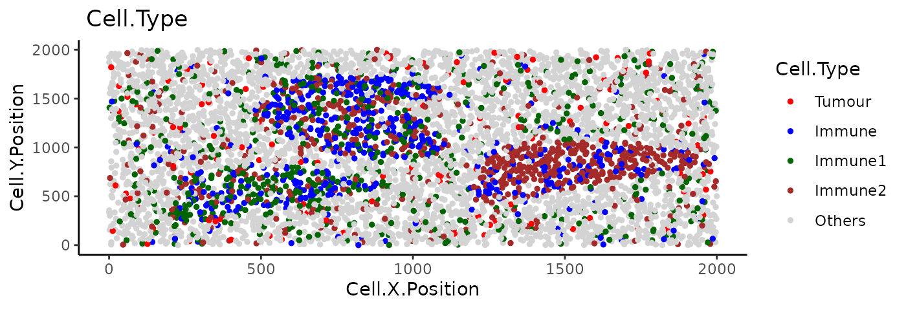
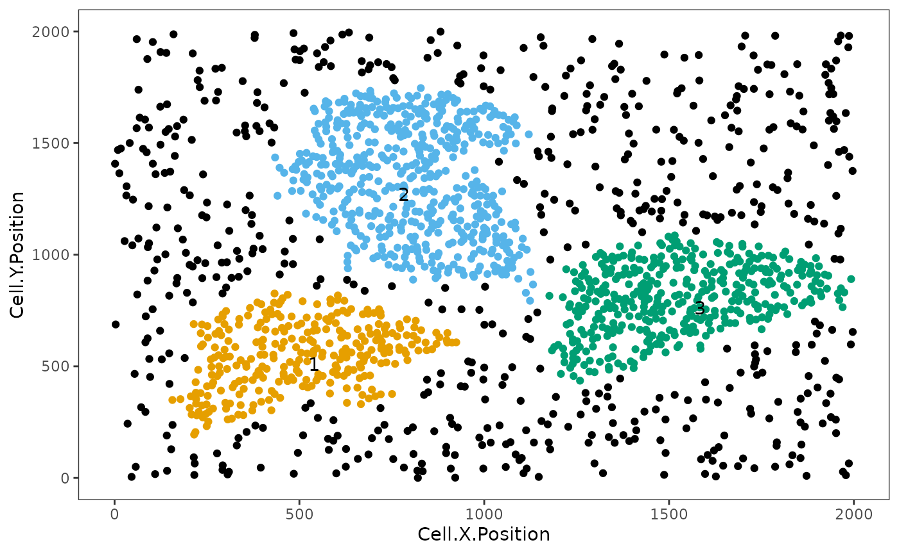
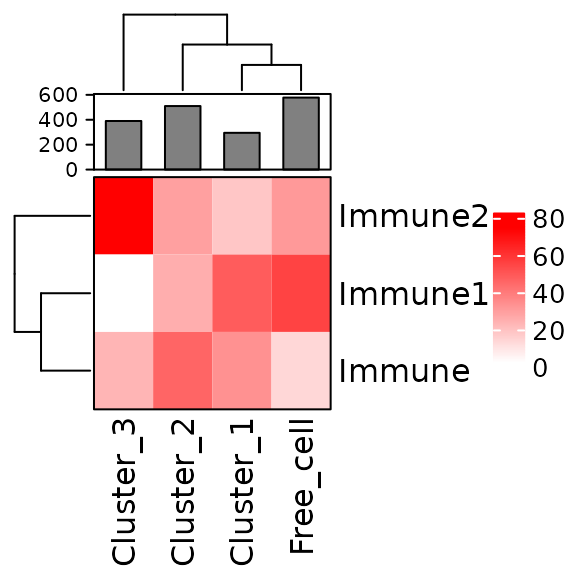

vignettes/neighborhood.Rmd
neighborhood.RmdThe aggregation of cells can result in ‘cellular neighbourhoods’. A neighbourhood is defined as a group of cells that cluster together. These can be homotypic, containing cells of a single class (e.g. immune cells), or heterotypic (e.g. a mixture of tumour and immune cells).
Function identify_neighborhoods() identifies cellular
neighbourhoods. Users can select a subset of cell types of interest if
desired. SPIAT includes three algorithms for the detection of
neighbourhoods.
For Hierarchical Clustering algorithm and dbscan,
users need to specify a radius that defines the distance for an
interaction. We suggest users to test different radii and select the one
that generates intuitive clusters upon visualisation. Cells not assigned
to clusters are assigned as Cluster_NA in the output table.
The argument min_neighborhood_size specifies the threshold
of a neighborhood size to be considered as a neighborhood. Smaller
neighbourhoods will be outputted, but will not be assigned a number.
Rphenograph uses the number of nearest neighbours to detect
clusters. This number should be specified by
min_neighborhood_size argument. We also encourage users to
test different values.
For this part of the tutorial, we will use the image
image_no_markers simulated with the spaSim
package. This image contains “Tumour”, “Immune”, “Immune1” and “Immune2”
cells without marker intensities.
data("image_no_markers")
plot_cell_categories(
image_no_markers, c("Tumour", "Immune","Immune1","Immune2","Others"),
c("red","blue","darkgreen", "brown","lightgray"), "Cell.Type")
Users are recommended to test out different radii and then visualise
the clustering results. To aid in this process, users can use the
average_minimum_distance() function, which calculates the
average minimum distance between all cells in an image, and can be used
as a starting point.
average_minimum_distance(image_no_markers)## [1] 17.01336We then identify the cellular neighbourhoods using our hierarchical algorithm with a radius of 50, and with a minimum neighbourhood size of 100. Cells assigned to neighbourhoods smaller than 100 will be assigned to the “Cluster_NA” neighbourhood.
clusters <- identify_neighborhoods(
image_no_markers, method = "hierarchical", min_neighborhood_size = 100,
cell_types_of_interest = c("Immune", "Immune1", "Immune2"), radius = 50,
feature_colname = "Cell.Type")
This plot shows clusters of “Immune”, “Immune1” and “Immune2” cells. Each number and colour corresponds to a distinct cluster. Black cells correspond to ‘free’, un-clustered cells.
We can visualise the cell composition of neighborhoods. To do this,
we can use composition_of_neighborhoods() to obtain the
percentages of cells with a specific marker within each neighborhood and
the number of cells in the neighborhood.
In this example we select cellular neighbourhoods with at least 5 cells.
neighorhoods_vis <-
composition_of_neighborhoods(clusters, feature_colname = "Cell.Type")
neighorhoods_vis <-
neighorhoods_vis[neighorhoods_vis$Total_number_of_cells >=5,]Finally, we can use plot_composition_heatmap() to
produce a heatmap showing the marker percentages within each cluster,
which can be used to classify the derived neighbourhoods.
plot_composition_heatmap(neighorhoods_vis, feature_colname="Cell.Type")
This plot shows that Cluster_1 and Cluster_2 contain all three types of immune cells. Cluster_3 does not have Immune1 cells. Cluster_1 and Cluster_2 are more similar to the free cells (cells not assigned to clusters) in their composition than Cluster_3.
We can test for the presence of neighbourhoods using ANNI. We can
calculate the ANNI with the function
average_nearest_neighbor_index(), which takes one cell type
of interest (e.g. Cluster_1 under Neighborhood
column of clusters object) or a combinations of cell types
(e.g. Immune1 and Immune2 cells under
Cell.Type column of image_no_markers object)
and outputs whether there is a clear neighbourhood (clustered) or
unclear (dispersed/random), along with a P value for the estimate.
Here show the examples for both one cell type and multiple cell types.
average_nearest_neighbor_index(clusters, reference_celltypes=c("Cluster_1"),
feature_colname="Neighborhood", p_val = 0.05)## $ANN_index
## [1] 0.3225717
##
## $pattern
## [1] "Clustered"
##
## $`p-value`
## [1] 4.616213e-110
average_nearest_neighbor_index(
image_no_markers, reference_celltypes=c("Immune", "Immune1" , "Immune2"),
feature_colname="Cell.Type", p_val = 0.05)## $ANN_index
## [1] 0.9968575
##
## $pattern
## [1] "Random"
##
## $`p-value`
## [1] 0.4000806p_val is the cutoff to determine if a pattern is
significant or not. If the p value of ANNI is larger than the threshold,
the pattern will be “Random”. Although we give a default p value cutoff
of 5e-6, we suggest the users to define their own cutoff based on the
images and how they define the patterns “Clustered” and “Dispersed”.
## R version 4.4.1 (2024-06-14)
## Platform: x86_64-pc-linux-gnu
## Running under: Ubuntu 22.04.4 LTS
##
## Matrix products: default
## BLAS: /usr/lib/x86_64-linux-gnu/openblas-pthread/libblas.so.3
## LAPACK: /usr/lib/x86_64-linux-gnu/openblas-pthread/libopenblasp-r0.3.20.so; LAPACK version 3.10.0
##
## locale:
## [1] LC_CTYPE=C.UTF-8 LC_NUMERIC=C LC_TIME=C.UTF-8
## [4] LC_COLLATE=C.UTF-8 LC_MONETARY=C.UTF-8 LC_MESSAGES=C.UTF-8
## [7] LC_PAPER=C.UTF-8 LC_NAME=C LC_ADDRESS=C
## [10] LC_TELEPHONE=C LC_MEASUREMENT=C.UTF-8 LC_IDENTIFICATION=C
##
## time zone: UTC
## tzcode source: system (glibc)
##
## attached base packages:
## [1] stats4 stats graphics grDevices utils datasets methods
## [8] base
##
## other attached packages:
## [1] SPIAT_1.6.3 SpatialExperiment_1.14.0
## [3] SingleCellExperiment_1.26.0 SummarizedExperiment_1.34.0
## [5] Biobase_2.64.0 GenomicRanges_1.56.1
## [7] GenomeInfoDb_1.40.1 IRanges_2.38.1
## [9] S4Vectors_0.42.1 BiocGenerics_0.50.0
## [11] MatrixGenerics_1.16.0 matrixStats_1.3.0
## [13] BiocStyle_2.32.1
##
## loaded via a namespace (and not attached):
## [1] deldir_2.0-4 gridExtra_2.3 rlang_1.1.4
## [4] magrittr_2.0.3 clue_0.3-65 GetoptLong_1.0.5
## [7] ggridges_0.5.6 compiler_4.4.1 spatstat.geom_3.3-2
## [10] png_0.1-8 systemfonts_1.1.0 vctrs_0.6.5
## [13] reshape2_1.4.4 stringr_1.5.1 shape_1.4.6.1
## [16] pkgconfig_2.0.3 crayon_1.5.3 fastmap_1.2.0
## [19] magick_2.8.4 XVector_0.44.0 labeling_0.4.3
## [22] utf8_1.2.4 rmarkdown_2.28 UCSC.utils_1.0.0
## [25] ragg_1.3.2 xfun_0.47 zlibbioc_1.50.0
## [28] cachem_1.1.0 jsonlite_1.8.8 goftest_1.2-3
## [31] highr_0.11 DelayedArray_0.30.1 spatstat.utils_3.1-0
## [34] cluster_2.1.6 parallel_4.4.1 R6_2.5.1
## [37] bslib_0.8.0 stringi_1.8.4 RColorBrewer_1.1-3
## [40] spatstat.data_3.1-2 spatstat.univar_3.0-0 jquerylib_0.1.4
## [43] iterators_1.0.14 Rcpp_1.0.13 bookdown_0.40
## [46] knitr_1.48 tensor_1.5 Matrix_1.7-0
## [49] tidyselect_1.2.1 abind_1.4-5 yaml_2.3.10
## [52] codetools_0.2-20 doParallel_1.0.17 spatstat.random_3.3-1
## [55] spatstat.explore_3.3-1 lattice_0.22-6 tibble_3.2.1
## [58] plyr_1.8.9 withr_3.0.1 evaluate_0.24.0
## [61] desc_1.4.3 polyclip_1.10-7 circlize_0.4.16
## [64] pillar_1.9.0 BiocManager_1.30.23 foreach_1.5.2
## [67] generics_0.1.3 ggplot2_3.5.1 munsell_0.5.1
## [70] scales_1.3.0 apcluster_1.4.13 glue_1.7.0
## [73] pheatmap_1.0.12 tools_4.4.1 dittoSeq_1.16.0
## [76] RANN_2.6.1 fs_1.6.4 cowplot_1.1.3
## [79] grid_4.4.1 colorspace_2.1-1 nlme_3.1-164
## [82] GenomeInfoDbData_1.2.12 cli_3.6.3 spatstat.sparse_3.1-0
## [85] textshaping_0.4.0 fansi_1.0.6 S4Arrays_1.4.1
## [88] ComplexHeatmap_2.20.0 dplyr_1.1.4 gtable_0.3.5
## [91] sass_0.4.9 digest_0.6.36 SparseArray_1.4.8
## [94] ggrepel_0.9.5 rjson_0.2.21 htmlwidgets_1.6.4
## [97] farver_2.1.2 htmltools_0.5.8.1 pkgdown_2.1.0
## [100] lifecycle_1.0.4 httr_1.4.7 GlobalOptions_0.1.2